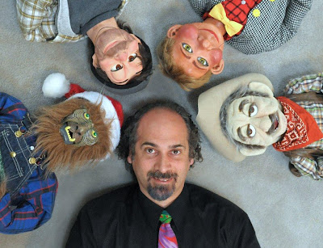

The right time and place
6/13/2010
{kind=link}

From Bob AbdouWillie the werewolf works for Santa,
Gutters is drunk but does not drink.
Rusty is just lost in his head,
Roofus is a singing cowboy.
Me, I'm the straight man.
Even though I got into vent at mid-life age, (30 years old), I am very grateful that I got in when I did. I met some incredible vents in their prime; I hung out with the best and I saw the best. I did have to learn the ropes, keeping my mouth (not lips) shut and just listen. And listen I did.
I am glad I made a career (so far) as being a vent/puppeteer. My life is so rich - money could not out weigh it. I will always say, it's not the age but the mileage, even though I have been in this biz for almost 20 years. The past 14 years have been spent working as a professional (meaning, if I don't work, I don't eat). I am the pro today because of my desire to succeed and act like a real vent should on and off stage. I want peers to look at me and smile with approval.
I am glad I did all that I did when I did it, because vent today is not the same as it was 20 years ago. My world of vent opened up to me at the right time and place. I hope the same is true for you.
I am glad I made a career (so far) as being a vent/puppeteer. My life is so rich - money could not out weigh it. I will always say, it's not the age but the mileage, even though I have been in this biz for almost 20 years. The past 14 years have been spent working as a professional (meaning, if I don't work, I don't eat). I am the pro today because of my desire to succeed and act like a real vent should on and off stage. I want peers to look at me and smile with approval.
I am glad I did all that I did when I did it, because vent today is not the same as it was 20 years ago. My world of vent opened up to me at the right time and place. I hope the same is true for you.